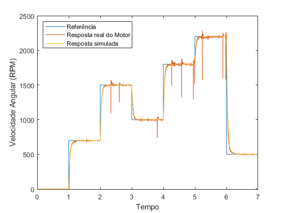
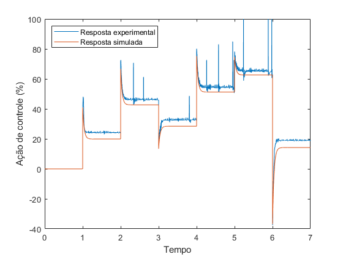

Contents
close all % clear all clc % systemIdentification % sisotool load('MF.txt'); ref = MF(:,4); RPM = MF(:,1); U = MF(:,2); t = 0:1e-3:((length(ref)/1000) - 1e-3); input_simulink = [t' ref]; data_to_simulink = [t' RPM];
Dados do robô
Ts = 1e-3; r = 16e-3; % Raio da roda l = 69e-3; % Distância do centro do robô até o centro das rodas s = tf('s'); z = s;
Controlador de velocidade dos motores
Modelo do motor com roda
Km = 455.5; % Km = 460; Pm = 12.97; Modelo = Km/(s + Pm); % Parâmetros do controlador ts_m = 0.15; %tempo de assentamento KPm = 4/(Km*ts_m); KIm = Pm*KPm; Controlador = KPm*(s+KIm/KPm)/s; Tm = feedback(Modelo*Controlador, 1); K = Km*KPm; Td = ((K*Ts)/(K*Ts+2))*((z+1)/(z+((K*Ts-2)/(K*Ts+2))));
Plot
close all clc figure % subplot(2,1,1) plot(t,ref,t,RPM,t,resp_modelo_RPM(1:7000,1)) legend('Referência','Resposta real do Motor','Resposta simulada','Location','northwest'); ylabel('Velocidade Angular (RPM)'); xlabel('Tempo'); axis([0 7 -10 2500]); figure % subplot(2,1,2) plot(t,U,t,resp_modelo_U(1:7000,1)) legend('Resposta experimental', 'Resposta simulada','Location','northwest'); ylabel('Ação de controle (%)'); xlabel('Tempo'); 